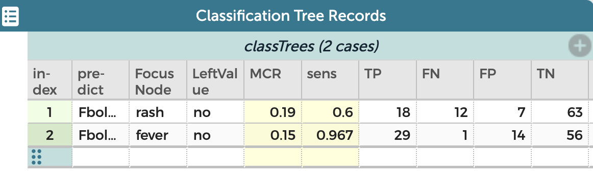

How good is your tree?
Now we come to the issue of the quality of a tree. If you’ve made a tree, how good is it? And more deeply, if you have two versions of a tree, which is better?
Of course, if a tree is perfect—it gives a correct diagnosis every time—there is no problem deciding if it’s good enough. It is. But if you’ve stayed with us this far, you have seen that the prediction a tree gives is not always correct.
So: to compare two trees, we need a measure of tree quality. You will pick the tree with the best value for that measure.
The problem is, what measure should you pick? With Arbor, you can construct various measures and then see how they evaluate the trees. You can ask yourself whether the measure you choose (or design) faithfully represents what you think is important in your context.
Constructing a measure
Let’s look at one common measure, called the misclassification rate, which I will abbreviate MCR. That’s equal to
\[\rm{MCR} = \frac{\textrm{number of wrong diagnoses}}{\textrm{number of diagnoses}}\]
Arbor can supply you with various numbers you can combine to make your measure. These include the number of true positives (\(\rm{TP}\)), false negatives (\(\rm{FN}\)), and so forth. With those numbers, you could calculate the MCR like this:
\[\rm{MCR} = \frac{FP+FN}{TP+TN+FP+FN}\]
The plan, then, would be to make a formula for MCR—or whatever measure you want—in CODAP. But where would you make that formula? And how would you get the attributes like TP to put in it?
Getting FP and TN and all that
As you have seen, these numbers appear at the bottom of your tree. You could copy them, but you don’t have to.
Let’s revisit the Fbola example. The live illustration below shows a tree that uses only the rash attribute as a predictor. In the context of the example, that means we send everybody home who has a rash, and do not take their temperature.
As you can see from the values below the tree, among the 100 people, we have 7 false positives (FP=7) and 12 false negatives. That means that the misclassification rate, MCR, is (7 + 12)/100, or 0.19.
We don’t want to do that calculation by hand every time, so do this:
Click the disclosure triangle just left of in order to export. Some controls appear. Ignore most of them!
Press the emit data button.
Aha! A new table appears called Classification Tree Records. You can see that it has already calculated MCR and (scroll right…) reports values for TP, FN, and the rest as well as N (the total number) and potentially useful quantities such as the number of nodes altogether and the depth of the tree.
Let’s change the tree so we can compare!
Drag
feverin and drop it on the left-hand node.Give the two “vacant” leaves appropriate values.
Click emit data again.
Your new table should now look like this:

According to the MCRs—where we want a small value—the new tree is better. The sensitivity1 (sens) in the table is also better (we want it to be large).
1 We will discuss sensitivity in a bit
Now. Arbor comes with MCR and sens pre-defined. But they are only CODAP columns with formulas. This means that you can make new columns inth is table and define any possible measure of quality for your trees.
Which tree made this?
The best for last: As you might imagine, after you’ve made a few trees and emitted the data, you might not reemmber exactly what tree created which line in the table.
Don’t worry: Arbor has your back.
Simply click on the row you want to know about in the Records table, and Arbor will restore that tree.
We will continue with this topic in a bit more depth in the next example, using breast-cancer data.